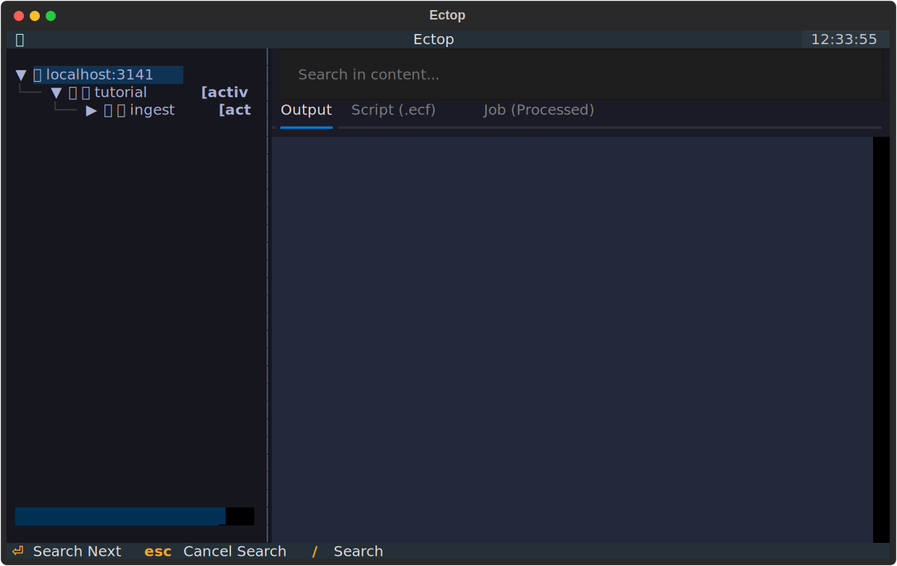

Tutorial: Getting Started with ectop¶
This tutorial will guide you through using ectop to monitor and manage a sample ecFlow suite.
Prerequisites¶
- ecFlow Server: Ensure you have an ecFlow server running. You can start one locally with:
- ectop: Installed and ready to use.
Step 1: Create and Load the Tutorial Suite¶
We have provided an example suite in examples/tutorial_suite.py. This suite simulates a simple data processing workflow with dependencies.
-
Generate the definition file:
This will create atutorial.deffile. -
Load the suite into your server:
-
Begin play:
Step 2: Launch ectop¶
Now, start ectop to monitor the suite:
You should see the tutorial suite in the tree on the left.

Step 3: Monitoring and Interaction¶
The Status Bar¶
At the bottom of the screen, you will find the Status Bar. This provides critical information at a glance:
- Server: The host and port you are connected to.
- Version: The version of the ecFlow server (e.g., v5.11.4).
- Status: The scheduling state of the server (e.g., RUNNING or HALTED).
- Last Sync: The exact time of the last successful synchronization with the server.
The Tree View¶
The left sidebar shows the hierarchy of your suite. You can use the arrow keys to navigate and Enter to expand or collapse nodes. Icons next to node names indicate their current state (e.g., 🟢 for complete, 🔥 for active).
Viewing Files¶
Select a task (e.g., tutorial/ingest/get_data) and press l to Load. ectop will fetch the script, the generated job, and any available log output, displaying them in the tabs on the right.
Managing Nodes¶
ectop provides full control over your ecFlow nodes:
- Suspend/Resume: Select a node and press
sto Suspend (🟠) oruto Resume. - Kill: If a task is stuck or running too long, press
kto Kill it. - Force Complete: Press
fto manually move a node to the Complete (🟢) state. - Requeue: Press
R(Shift + R) to reset a node and its children, moving them back to the Queued (🔵) state.
Live Log Updates¶
If a task is running (Active 🔥), you can toggle live log tailing by pressing t. The Output tab will periodically refresh with new data from the server.
Searching within Content¶
When viewing a large log file or complex script, press Ctrl + F to search within the current content tab. This will highlight matches and allow you to find specific strings quickly.
Why is it queued?¶
If a node is not running when you expect it to, select it and press w. The Why Inspector will show you the triggers or dependencies that are currently blocking it. This view recursively parses trigger expressions, highlighting exactly which parts of the logic are unmet.
Finding Nodes¶
In large suites, finding a specific task can be difficult. Press / to open the Search Box. As you type, ectop will perform a live search across all nodes in the suite. Press Enter to jump to and select the next matching node.
Filtering by Status¶
You can filter the tree to show only nodes in a specific state by pressing F (Shift + F). This cycles through filters like:
- Aborted: Focus only on failed tasks.
- Active: See what is currently running.
- Suspended: Find paused parts of the workflow.
- All: Clear all filters.
The current filter is displayed in the tree root label.
Managing Variables¶
Press v to open the Variable Tweaker.
- User Variables: Defined specifically on this node.
- Generated Variables: Automatic ecFlow variables (like ECF_TRYNO).
- Inherited Variables: Variables defined on parent families or the suite itself.
To override an inherited variable, simply add a new variable with the same name to the current node.
Utility Actions¶
- Copy Path: Press
cto copy the absolute ecFlow path of the selected node to your clipboard. - Manual Refresh: While
ectopupdates automatically, you can force a full sync of the suite tree by pressingr.
Server Control¶
If you have administrative privileges, you can control the server's scheduling state:
- Halt Server: Press H (Shift + H) to stop the server from scheduling any new tasks. The status bar will show HALTED.
- Start Server: Press S (Shift + S) to resume scheduling. The status bar will show RUNNING.
The Command Palette¶
If you forget a keybinding, press p to open the Command Palette. This searchable interface allows you to execute any action by name (e.g., type "halt" to find the "Halt Server" command).
Quitting¶
When you are finished, press q to safely exit ectop.
Step 4: Editing Scripts on the Fly¶
One of ectop's most powerful features is the ability to edit scripts directly.
- Select a task.
- Press
e. - Your default editor (defined by
$EDITOR) will open with the script content. - Make a change and save.
ectopwill prompt you if you want to update the script on the server and optionally Requeue the task to run the new version.
Next Steps¶
Explore the Architecture page to learn how ectop works under the hood, or check the Reference for a full list of keybindings.